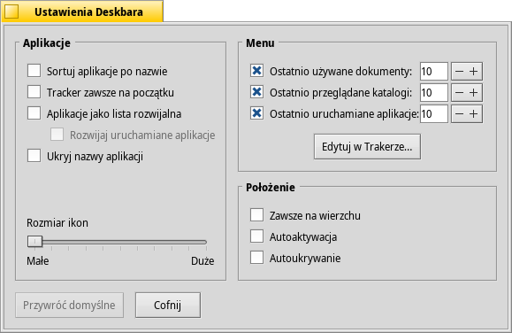

| Spis treści |
|
Menu Deskbara Tacka Lista uruchomionych aplikacji |
Deskbar
Deskbar jest małym panelikiem domyślnie umieszczonym w prawym górnym rogu ekranu. Jest to odpowiednik paska zadań z przyciskiem Start w systemie Windows. Składa się on z menu Deskbara, z którego można uruchomić aplikacje i panele preferencji, tacki z zegarem i innymi narzędziami poniżej, oraz z listy uruchomionych aplikacji na samym dole.

You can move the Deskbar to any corner or as a bar along the upper or lower border of the screen by gripping the knobbly area on one side of the tray (see arrows above) and drag & drop it into the new position.
You can also fold it into a more compact layout by drag & dropping the knobbly area onto Deskbar's Leaf menu. Being only the height of a regular window tab, even windows that take up the whole screen won't obscure the Deskbar tray with its clock and icons.
Łapiąc uchwyt po przeciwnej stronie, można zmienić szerokość Deskbara ciągnąc w lewo lub w prawo:

Szerszy Deskbar umożliwia wyświetlenie w tacce większej liczby ikon w rzędzie, będzie również rzadziej obcinał dłuższe nazwy uruchomionych aplikacji, zwłaszcza jeśli używane są większe ikony.
 Menu Deskbara
Menu Deskbara
Gdy klikniesz na górze Deskbara, otworzy się menu:

Informacje o systemie... – wyświetla podstawowe informacje o systemie, licencje i „listę płac” projektu Haiku.
Znajdź... – otwiera okno Zapytania.
Pokaż replikanty – pokazuje/ukrywa mały widżet Replikanta używany do jego przeciągania, usuwania i dostępu do menu.
Zamontuj – oferuje te same opcje co menu wywołane prawym przyciskiem myszy na Pulpicie (zobacz Montowanie partycji).
Ustawienia Deskbara... – otwiera panel konfiguracji Deskbara (zobacz niżej).
Wyłącz komputer... – pozwala lub komputer.
Ostatnio używane... – lista ostatnio używanych dokumentów, katalogów i aplikacji (zobacz sekcję niżej).
Aplikacje, Dema, aplety Deskbara, Preferencje – lista zainstalowanych aplikacji, dem, apletów i panelów preferencji.
Możesz dodać dowiązania do innych programów (lub katalogów, dokumentów, zapytać itp.) umieszczając je w katalogu ~/config/settings/deskbar/menu/.
Ustawienia Deskbara

Panel preferencji Deskbara jest podzielony na trzy sekcje.
Aplikacje
Poniższe ustawienia nie mają wpływu na działanie samych programów, a tylko na zachowanie i wygląd listy uruchomionych aplikacji.
| Sortuje alfabetycznie listę uruchomionych aplikacji. | ||
| Tracker zawsze będzie pierwszy na liście, nawet mimo włączonego sortowania alfabetycznego. | ||
| Włącza mały widżet pozwalający pokazać/ukryć wszystkie okna aplikacji bezpośrednio pod jej wpisem w Deskbarze. | ||
| Nowo uruchomione aplikacje będą wyświetlać swoje okna automatycznie pod swoim wpisem w Deskbarze. | ||
| Usuwa etykiety tekstowe uruchomionych aplikacji. | ||
| Dostosowuje rozmiar ikon uruchomionych aplikacji. |
Menu
Pierwsze kilka elementów menu Deskbara jest tam na stałe, można jednak dostosować te poniżej .
Tutaj możesz ustawić liczbę ostatnio używanych dokumentów, katalogów i aplikacji, które mają być wyświetlane w odpowiednim menu, lub całkowicie wyłączyć tę funkcjonalność.
Przycisk otwiera katalog ~/config/settings/deskbar/menu/. Znajdziesz w nim pliki i katalogi pokazywane w Deskbarze, domyślnie są to , , oraz .
Możesz usuwać i dodawać wpisy – np. dowiązania do aplikacji, dokumentów, a nawet zapytań – po prostu kopiując/usuwając je do/z tego katalogu.
Programy zainstalowane z pakietów automatycznie umieszczają swój wpis w Deskbarze. W zależności od ich liczby może zrobić się w nim tłoczno. Jeżeli wolisz kompletną kontrolę i chcesz tam widzieć tylko samodzielnie umieszczone aplikacje (np. w katalogach wg kategorii), możesz to zrobić w następujący sposób: stwórz dowiązanie do katalogu menu w ~/config/settings/deskbar/ i zmień jego nazwę na menu_entries. Z Terminala użyj następującej komendy:
ln -s ~/config/settings/deskbar/menu ~/config/settings/deskbar/menu_entries
Okno
Wreszcie, ustawienia okna Deskbara:
| Deskbar będzie zawsze widoczny nad innymi oknami. | ||
| The Deskbar pops to the front when the mouse pointer touches where the Deskbar meets the screen edge, and is lowered when it leaves the Deskbar area. | ||
| Deskbar zostanie zredukowany do kilku pikseli i pojawi się tylko wtedy, gdy dotknie ich wskaźnik myszy. |
Tacka

W tacce znajduje się, między innymi, zegar. Najechanie na niego wskaźnikiem myszy wyświetli podpowiedź z aktualną datą. Kliknięcie lewym przyciskiem myszy pokazuje kalendarz, prawym – menu pozwalające ukryć/pokazać zegar lub uruchomić panel preferencji Czas w celu zmiany jego ustawień.
Każdy program może zainstalować ikonę w tacce jako interfejs dla użytkownika. Dla przykładu, system mejlowy wyświetla różne symbole, gdy są nieprzeczytane wiadomości, oraz oferuje menu kontekstowe pozwalające stworzyć wiadomość lub sprawdzić czy nie dotarły nowe. ProcessController to kolejny przykład aplikacji, która korzysta z ikony w tacce, aby informować użytkownika o bieżącym stanie systemu (użycie procesora/pamięci) oraz udostępnić menu z dodatkowymi opcjami.
Lista uruchomionych aplikacji

Możesz przełączyć się na konkretną aplikację klikając jej wpis w Deskbarze i wybierając jedno z jej okien w podmenu. Klikając prawym przyciskiem myszy możesz , lub zamknąć je, a razem z nimi całą aplikację.
Kliknięcie wpisu aplikacji z SHIFT CTRL ukrywa wszystkie jej okna, a z samym CTRL pokazuje je.
When using the "expander" setting to show all windows of an application, you can middle-click on a window or app to start a new instance. For example, middle-clicking a running StyledEdit will open a new document window.
Maybe more useful: while holding SHIFT, a middle-click on a window closes it. Handy when you'd like to close some of many open Tracker windows, for example.
Jeżeli włączone zostało rozwijanie elementów w ustawieniach Deskbara, możesz rozwijać/zwijać listę okien bezpośrednio pod wpisem aplikacji.
Z przodu każdego wpisu okna znajduje się symbol reprezentujący jego aktualny stan. Jasny oznacza że okno jest widoczne, ciemny – ukryte (zminimalizowane). Trzy linie obok oznaczają, że okno jest na innej przestrzeni roboczej.